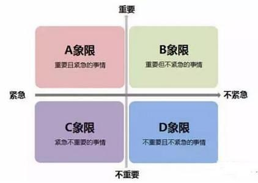
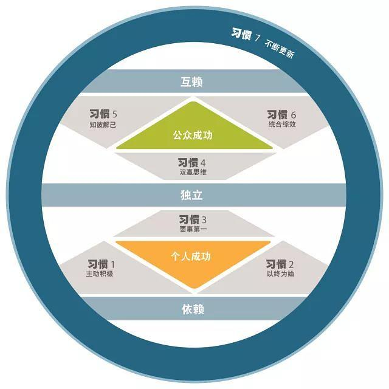
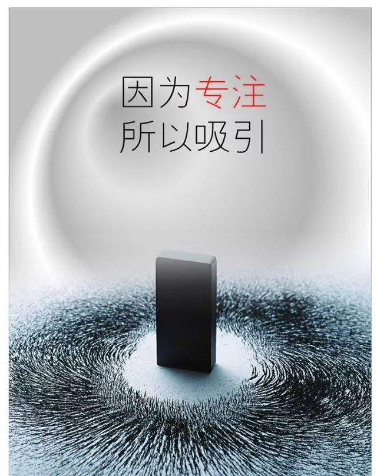

GTD 分为 =横向管理 和 =纵向管理 两个方面。
= 横向管理，其实就是事物在时空层面上的大搜集；纵向管理，则是事物在某一时空节点上的纵深。 横向收集，纵向执行！ 纵向管理偏重在横向管理的行动阶段！*
横向管理
横向管理有五个阶段：收集、分析、组织管理、检查（反馈）、行动。
1. 收集：填充工作篮
- 物理空间；
- 精神空间。
关键在于百分之百地捕获一切未尽事宜，以最快的速度收集下来，放入工作篮。
保持极简主义生活方式， =断、舍、离 ，可以从根本上大大缩短收集时间。
= 好的生活方式，可以让一个人更好地沉浸在某一种生活状态，以更利于个体的成长和发展。*
= 在纯粹的精神世界中，一切起于 念！ 取舍之间的平衡点在于有序、足够、简约。极简主义中的核心虽然是断、舍、离，但在执行过程中，“度”很重要，而在保持过程中，“有序”很关键！*
2. 分析：清空工作篮
清空工作篮的本质在于确定每一项工作的内容和实质，判断其是否需要采取行动。
_不需要采取行动：
- 垃圾 → 抛进垃圾桶；
- 孵化器 → 未来某一天可能会做；
- 参考资料 → 归档保存。
_需要采取行动的：
- 小于 2 分钟的立即处理；
- 大于 2 分钟的：
- 委托他人：
- 等待；
- 日程表（有时间要求的）。
- 自己执行（在管理阶段列清单）：
- 日程表（有时间要求的）；
- 下一步行动清单。
- 委托他人：
- 项目：
- 制定项目计划。
注意，这一步中，并不需要采取任何实际的行动，关键在于合理分类，分类的时候应遵循以下原则：
- 自上而下；
- 逐条处理；
- 机会均等。
= 一切都是为了尽可能快地解除‘焦虑’状态，快速地为未尽事宜分类，归入清单。*
3. 管理
对分类后的条目进行制定 _具体的行动方案 ：
- 垃圾 → 删除；
- 未来可期 → 孵化器；
- 参考资料 → 归档保存供查阅；
- 小于 2 分钟 → 立即处理；
- 下一步行动 → =必须是一目了然的具体行动 ；
- 日程表 → 只允许放置有具体时间要求的任务；
- 项目 → 分解为具体的行动、安排日程。
注意， _日程表 是十分神圣的，它和 _下一步行动 共同构成了每日管理的核心。
四象限工作法是个不错的标准：

= 在“分析”阶段，我们要做的是快速判断清空收集篮，在“管理”阶段，则需要认真分析，依照不同类型事物的标准进行切实的处理。*
= 这一步无疑是 重中之重 ，只有科学的、具体化的、可执行的行动，才是解决问题的关键，才是改造世界的直接力量。*
4. 检查
新的情况不断产生，每天的工作安排也必须时常回顾并做出相应调整，以保证 GTD 的尽收一切和全面管理。
如何检查呢？
…
每一天：
- 以 _日程表 作为开始，处理好日程表中紧要的任务；
- 之后，查阅 _下一步行动 清单和 _孵化器 。
=注意，定期（如每周）更新清单是至关重要的。
= 养成习惯，让享受美好的事情像呼吸一样简单和自然！早九晚九必检一次，中间实时更新即可。
5. 行动
选择最佳方案，如何决策？
_在某一时刻， 4 个模式：
- （地）环境；
- （时）有多少时间；
- （人）有多少精力；
- （事）重要性。
= 天时，地利，人和，重要性！*
_评估每日工作， 3 种模式：
- （预定）处理事先安排好的工作；
- （突发）处理随时冒出来的事件；
- （成长）定义你自己的工作。
= 一切都在计划之中，留些弹性给突发事件。多管齐下，生活才会更有趣。还是要每天都小总一下才好！
_回顾工作的 6 个标准：
- 目前的行动；
- 当前的工作（亟待处理的事项，短期成效）；
- 责任范围（工作、生活、个人成长）；
- 1~2 年的目标（各个领域的成就）；
- 3~5 年的展望（着眼全局，纵观趋势）；
- 整个生活的全景（终极的人生意义）。
= 所有的评估和回顾，终极目标都是了解‘真我’！预期的有无和意义，便在于这个求‘真’的过程之中，它是自然而然的，是会自己冒出来，而你也注定要解决的问题。*
= 这几个标准特别适合，周、月、季、年、大周期汇总，看，一切总结都是建立在实践之上的，空想大道是没有什么意义的。
= 其中第一类决策模式是发生在具体行动中的，后两者则都归属于检查反馈（即融于日常的生活习惯之中），可见规律性、周期性的“反馈”的重要性！反馈、检查 ✔️
高效能人士的七个习惯系统地讲解这个体系：

= 组织管理和行动这两步是很关键的，好的方案为行动的实施提供了便利，事半功倍，这两个环节和纵向管理又是密切相关的，不可分离的。*
纵向管理
需要更严格地控制某一项工作，确保行动方案切实可行时，便是纵向管理的用武之地。
= 就个人而言，横向管理使用的比较多，基本已经融入日常生活当中。纵向管理，就用的少了些，可能还是有时候太浮躁了，要静下心来，多思、多想，思而后行，行而有得。
纵向管理也有五个阶段：目的/原则、前景/结果、集思广益、组织协调、下一步行动。
= 看！纵向管理，是正式的组织管理和行动，它是融入其中的！*
1. 目的/原则
目的是什么？是否清晰而具体？
- 界定成功（要实现什么）；
- 集结资源（客观环境）；
- 激发动机（主观能动）；
- 阐明重点（主要矛盾）；
- 拓宽选择（可能）；
- 澄清原则（本心）。
= 过多的解释和条目，往往让人很烦！总结来说，就是结合自身内外条件，想要阶段性的取得一种什么结果，其他一切都是围绕这个中心的！为什么要‘界定’呢？要预演！脑海中的预演可以更好、更早地发现行动过程中可能出现的问题，防患于未然，不仅大大地节省了可能要花费的并无意义用处的时间和精力，对行动的激励所产生的正面效应也是极大的。“之所以打醋，不就是为了这点饺子！”*
= 凡事计划，很少有能一蹴而就的，多是分阶段性的，对于成功的界定就很重要，正所谓，心向高远，目视脚下，路途长而艰、寂而孤，就更需要阶段性的鼓舞与激励！由内而外，反求诸己，利用客观环境，发挥主观能动，突破经验本本，分析主次轻重，扩展思维，明晰本心，澄清并坚守原则。*
= 这个过程是繁琐的，却是非常重要的！认真思考要达成的目标，分析客观条件、主观现实，实事求是地分析矛盾及事物可能的走向，明晰本心真我。*
2. 前景/结果
- 聚焦；
- 阐明结果。
= 能吃到的果子，才能真正解渴！
量子吸引力法则：
量子力学理论中重要的一点就是振动频率相同的东西，会互相吸引而且引起共鸣。我们的意念、思想、情绪具有可感知的能量，而我们的脑电波不断产生振动频率，只要有振动，就会影响其他同样在振动的事物。我们的大脑就是这个世界上最强的“磁铁”，我们的起心动念，无时不在向宇宙发出信号，和你的脑电波振动频率相同的东西，会统统被你吸引过来。你生活中的一切，都是你自己吸引来的。佛陀在 2500 多年前所说的“唯心所见，唯识所变”，便是这个哲理。
= 意识的更新。*
3. 集思广益
头脑风暴，启动思维，打破常规的思考模式，基本原则：
- 不判断，不质疑，不评估，不批判；
- 追求数量，不求质量；
- 把分析组织工作置于次要的位置，放在下个阶段处理。
= 在头脑中搜集所有的可能性，不放过任何蛛丝马迹。不唯经验、教条，实事求是！突然更深地认识到，以上种种，在《毛泽东选集》中都有讲到…… 教员威武！*
4. 组织协调
_组织管理的要素：
- 明确意义重大的事件；
- 排序（构成因素、先后顺序、重要程度）；
- 必要程度的详述。
5. 下一步行动
如果一项工作具有可操作性，其下一步行动方案就必须予以落实，必须有切实可行的具体行动。
= 实践，是实现一切计划的根本途径！*
= 综上来看，纵向管理就是界定成功（明晰目标）、预演前景结果、想尽可能多的方案，从中取优协调，进行形成一个科学合理的、可明确执行的、有意义的行动方案，以保证具体执行过程顺利，达到预期目标！*